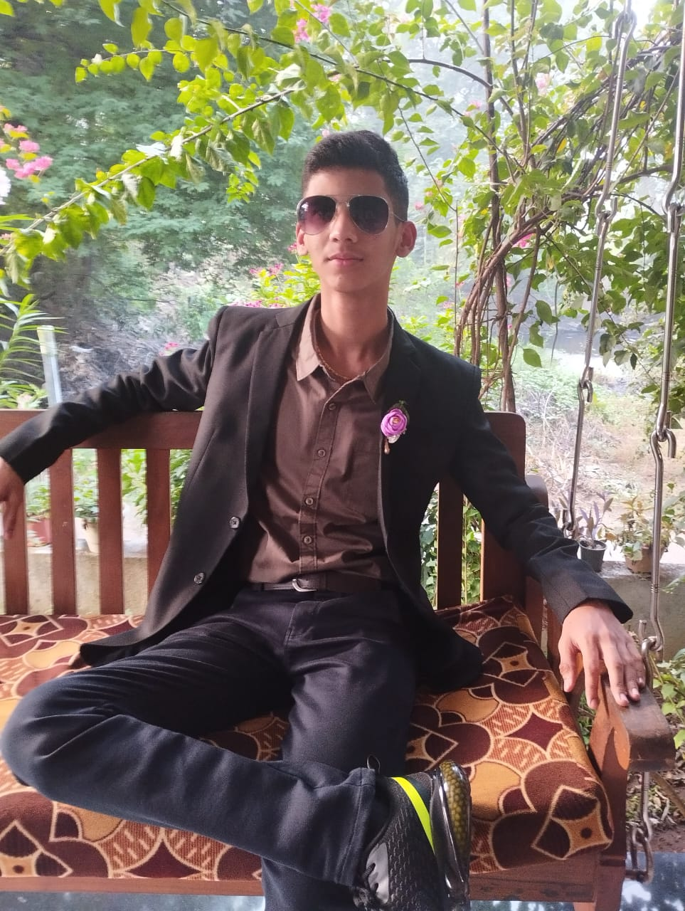
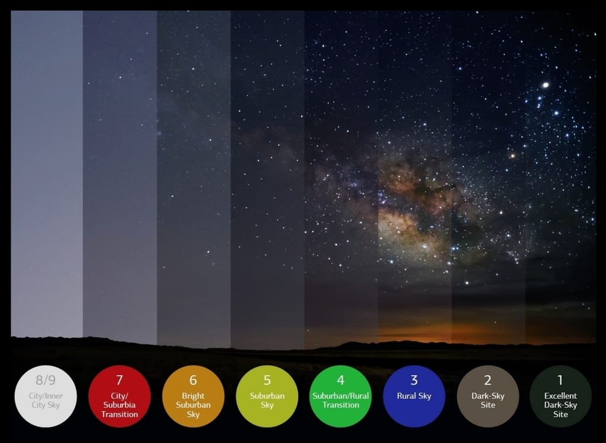
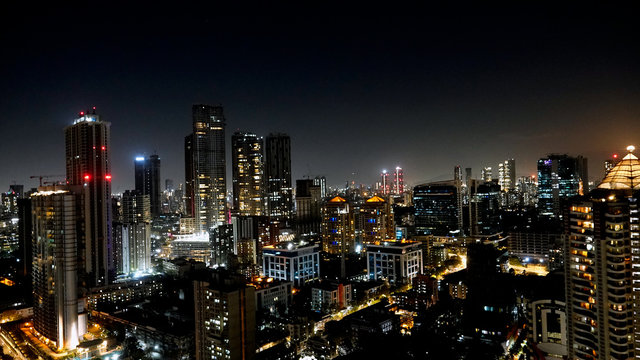
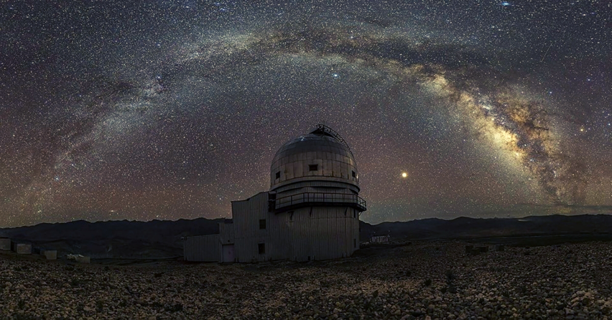

The night sky is still there.
We just can’t see it anymore.
I’m Royce Dcunha, a student and space enthusiast. This project explores how artificial light is erasing our view of the universe.

Royce DcunhaLight pollution affects sleep cycles, wildlife behavior, energy consumption, and disconnects humanity from the cosmos that once guided civilizations.
Same planet.
Different skies.
City lights overpower stars. Darkness reveals the Milky Way.


India at night
Satellite imagery exposes how brightness spreads across cities.



Mumbai vs Hanle
Urban glow hides stars. High-altitude darkness reveals the universe.


How We Can Reduce Light Pollution
Use shielded lighting
Switch to warm LEDs
Install motion sensors
Turn off unnecessary lights
Create dark sky reserves
Spread public awareness